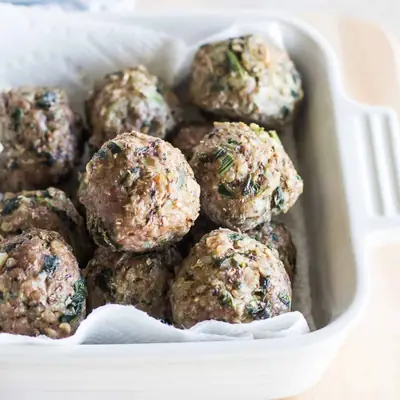

Beef and Quinoa Meatballs

Ingredients
- 1 lb. ground beef (at least 90% lean)
- 3/4 cup cooked quinoa (125g)
- 4 ounces baby bella mushrooms (stems removed)
- 1/2 med onion
- 2 garlic cloves
- 1/2 cup thawed frozen chopped spinach (squeezed dry)
- 1 egg (whisked)
- 1/4 cup rolled oats (25g)
- 2 tsp Italian seasoning (or whatever seasonings you like)
- 2 tablespoons finely grated parmesan cheese (optional)
Steps
- Preheat oven to 400F. Using a food processor, pulse mushrooms until finely chopped. Transfer to a bowl and then add the onion, and garlic to blender and pulse until finely chopped also. Be careful not to overpulse to retain texture.
- In a large bowl, combine all the ingredients. Mix ingredients using your hands (but don’t overwork the meat!) and shape into small sized balls. Place in greased mini muffin pan (or baking sheet) and bake for 15-20 min, or until meatballs are browned and cooked through.
Recipe by Min Kwon · Kidfriendly Meals, from MJ and Hungryman. Saved here for personal use; the original has the full notes, tips and photos. Open original